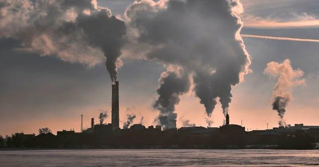

يشير تغير المناخ إلى التحولات طويلة المدى في درجات الحرارة وأنماط الطقس. قد تكون هذه التحولات طبيعية وتحدث ، على سبيل المثال ، من خلال التغيرات في الدورة الشمسية. ومع ذلك ، منذ القرن التاسع عشر ، أصبحت الأنشطة البشرية السبب الرئيسي لتغير المناخ ، ويرجع ذلك أساسًا إلى حرق الوقود الأحفوري ، مثل الفحم والنفط والغاز. يؤدي حرق الوقود الأحفوري إلى إطلاق غازات الدفيئة التي تعمل مثل غلاف شامل حول العالم ، مما يؤدي إلى حبس حرارة الشمس ورفع درجات الحرارة. من أمثلة انبعاثات غازات الاحتباس الحراري المسببة لتغير المناخ ثاني أكسيد الكربون والميثان. يتم إنتاج هذه الغازات ، على سبيل المثال ، عن طريق استخدام البنزين لقيادة السيارات أو الفحم لتدفئة المباني ، ويمكن بدورها تخليص الحقول والأراضي من الأعشاب والشجيرات ، وثاني أكسيد الكربون الرقيق. شبكة مكبات النفايات هي مصدر رئيسي لانبعاثات غاز الميثان. الأثاث والاستهلاك في الصناعة والإنتاج والإنتاج والاستخدام المهني.
والانبعاثات مستمرة في الارتفاع. ونتيجة لذلك ، أصبحت الكرة الأرضية الآن أكثر دفئًا بمقدار 1.1 درجة مئوية عما كانت عليه في أواخر القرن التاسع عشر. وكان العقد الماضي (2011-2020) هو الأكثر دفئًا على الإطلاق. يعتقد الكثير من الناس أن تغير المناخ يعني في الأساس الاحترار ، لكن الاحترار ليس سوى بداية القصة ، ولأن الأرض مثل هذا النظام ، حيث يرتبط كل شيء ، فإن التغييرات في منطقة واحدة قد تؤدي إلى تغييرات في جميع المناطق الأخرى. تشمل عواقب تغير المناخ ، من بين أمور أخرى ، الجفاف الشديد ، وندرة المياه ، والحرائق الشديدة ، وارتفاع مستويات سطح البحر ، والفيضانات ، وذوبان الجليد القطبي ، والعواصف الكارثية ، وتدهور التنوع البيولوجي.
يؤثر تغير المناخ بالفعل على الصحة بعدة طرق ، بما في ذلك التسبب في الوفاة والمرض من الظواهر الجوية المتطرفة المتكررة بشكل متزايد مثل موجات الحرارة والعواصف والفيضانات ، وتعطيل النظم الغذائية ، وزيادة الأمراض الحيوانية المنشأ ، والأمراض المنقولة بالغذاء والمياه ، والأمراض المنقولة بالنواقل ، والأمراض العقلية. مشاكل صحية.
